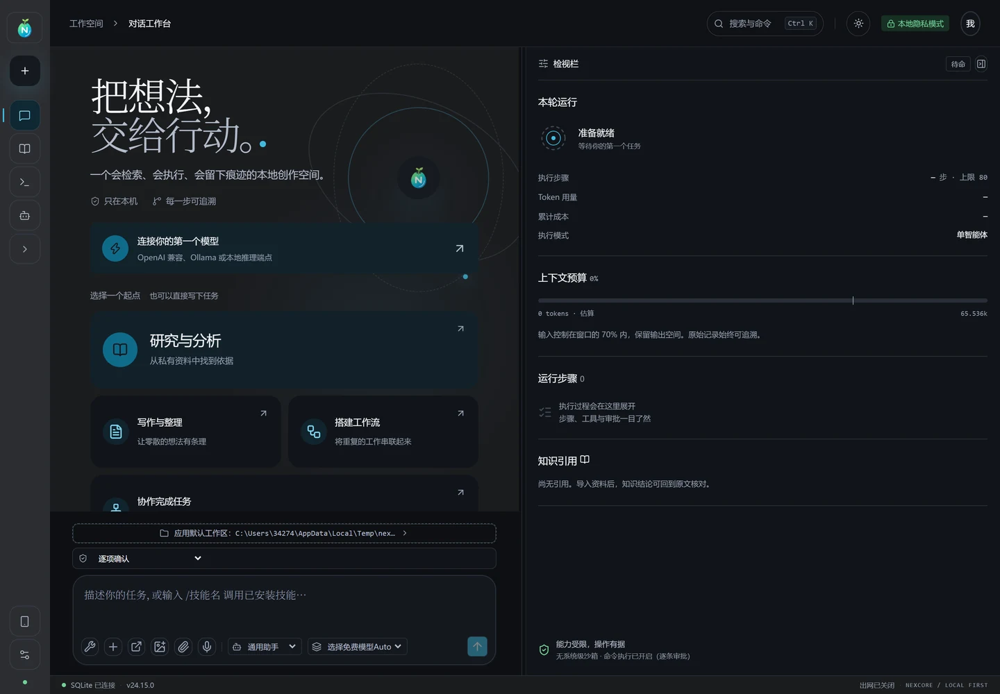
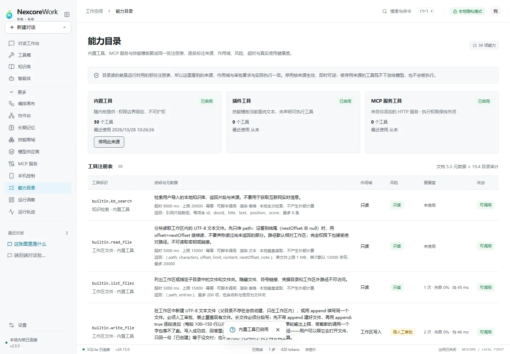

01 / WORKSPACE
从一句话，到可继续的工作区
新对话绑定项目目录。文件、附件与项目记忆跟随工作区，而不是丢失在聊天记录里。

把模型、工具、文件、记忆和执行证据收进同一张工作台。每一步都可见，每个结果都能复核。

每次任务先确定工作区，再选择模型与工具。写入和命令经过权限边界，结果进入过程记录，未完成时会明确停下。
01 / WORKSPACE
新对话绑定项目目录。文件、附件与项目记忆跟随工作区，而不是丢失在聊天记录里。
02 / EXECUTION
参数、耗时、退出码、完整返回与文件行变化都能展开查看。
03 / MEMORY
读写、只读、关闭三态。记忆写进 .NexcoreWork，可查看、修正和删除。
模型说“完成了”不算完成。有没有调用工具、写了哪个文件、改了多少行、为什么停下，都由运行时留下证据。
任务开始时显示思考动画，工具调用、交付文件和阶段结果实时进入对话气泡。

固定前缀、注入层、对话历史、当前输入分区计量。超限时按顺序压缩，保留约束与可回读原文。
context_budget / policy / checkpoint工具来源、风险、超时、调用次数和失败率放在同一张表里。
研究、实现、审核与验证可以分派给不同智能体，结果交回主任务。
报告、HTML、图片和代码都带路径与行变化，可直接预览或定位到文件夹。
独立窗口、原生文件选择器、任务栏右键、资源管理器定位和本地 SQLite。关闭窗口后服务正常释放。
内置硅基流动与 Agnes 免费模型。选择“免费模型Auto”后，系统按任务类型、能力、上下文窗口和实测首字延迟自动路由；端点失败时切换下一个免费模型。
体验免费模型Auto ↗下载 Windows 2.0，选择工作区，然后直接选择“免费模型Auto”。